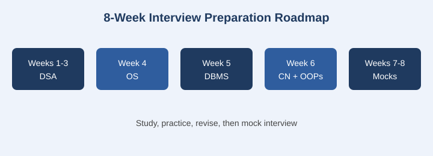

Why you need an interview preparation roadmap
Most computer science students start technical interview preparation late and without structure. They jump between random DSA problems, skim operating system notes the night before, and ignore databases and networking completely. Campus recruiters, however, test all of these areas. A clear CS interview preparation roadmap removes the guesswork: you know what to study, in which order, and for how long.
This guide is written for engineering and MTech students preparing for campus placements and internships. It is based on a self-study system covering the core subjects that companies ask most often.

8-week study plan for freshers
| Week | Focus | Goal |
|---|---|---|
| 1-2 | DSA basics: arrays, strings, hashing, recursion | Solve 40 easy and medium problems |
| 3 | DSA advanced: trees, graphs, dynamic programming | Solve 25 medium problems |
| 4 | Operating systems | Processes, threads, scheduling, deadlocks, memory |
| 5 | DBMS and SQL | Normalization, transactions, indexing, 30 SQL queries |
| 6 | Computer networks and OOPs | OSI/TCP-IP, HTTP, DNS, four OOP pillars |
| 7 | Aptitude and system design basics | Daily timed practice |
| 8 | Mock interviews and revision | 3 mock interviews, resume review |
Core subjects interviewers ask about
Data structures and algorithms (DSA)
A DSA roadmap for placements should start with arrays and strings, then move to linked lists, stacks, queues, trees, graphs and dynamic programming. Practice on one platform consistently instead of switching often. Always explain time and space complexity aloud, because interviewers care about your reasoning as much as the final code.
Operating systems
Focus on process versus thread, CPU scheduling algorithms, synchronization, deadlock conditions, paging and virtual memory. These are among the most repeated OS interview questions for freshers.
Database management systems
Know ER diagrams, normal forms, ACID properties, indexing and joins. Practice writing SQL queries by hand, including group by, subqueries and window functions.
Computer networks
Understand the OSI and TCP/IP models, what happens when you type a URL in a browser, TCP versus UDP, DNS, and HTTP versus HTTPS.
Object-oriented programming
Be ready to explain encapsulation, abstraction, inheritance and polymorphism with real examples, plus the difference between an abstract class and an interface.
Tips to stay consistent
- Study in fixed daily blocks of 2 to 3 hours instead of occasional marathons.
- Keep a notebook of mistakes and revise it every weekend.
- Practice explaining answers out loud, as you would in a real interview.
- Take at least one mock interview every week in the last two weeks.
- Keep your resume projects ready to discuss in depth, including design choices and trade-offs.
Frequently asked questions
How many months are needed for interview preparation?
Two months of focused effort is enough for most students if they already know the basics. Beginners should plan three to four months.
Which subject should I start with?
Start with DSA, since it carries the most weight in coding rounds, and add one theory subject every week alongside it.
Are core CS subjects really asked in interviews?
Yes. Many companies ask OS, DBMS and networking questions in technical and HR-technical rounds, especially for fresher roles.